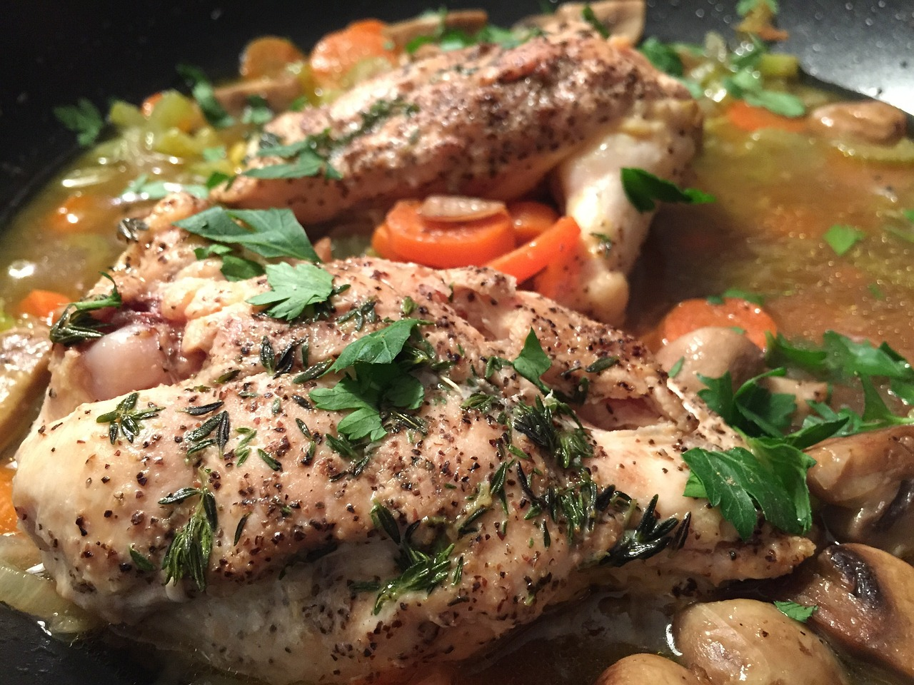
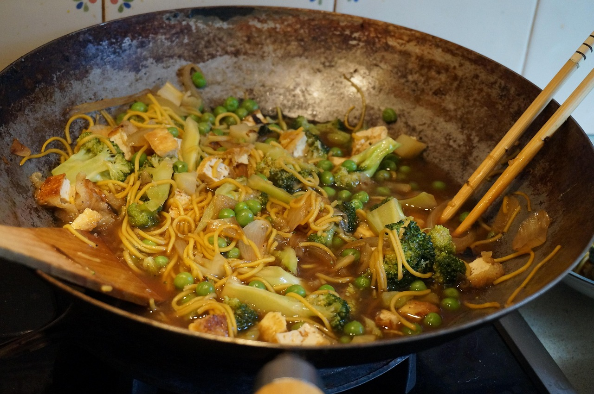

Home
Breakfasts
Lunches
Dinners
Others
Snacks
Drinks
Dinner Tips
Plan ahead to avoid late meals
Include vegetables for balance
Keep it light if eating late
Dinners
Grilled Chicken

Ingredients:
2 Chicken breast
2 tbsp Olive oil
2 cloves, minced Garlic
1 tbsp Lemon juice
to taste Salt
to taste Pepper
Steps:
In a bowl, combine the olive oil, garlic, lemon juice, salt, and pepper.
Add the chicken breasts to the bowl and coat them with the marinade.
Preheat the grill to medium-high heat.
Grill the chicken breasts for 6-7 minutes on each side, or until fully cooked.
Serve with your favorite side dishes.
Vegetarian Stir-Fry

Ingredients:
1 cup, chopped Broccoli
1, sliced Bell pepper
1, sliced Carrot
1/2 cup Snow peas
2 tbsp Soy sauce
1 tbsp Olive oil
2 cloves, minced Garlic
1 tsp, grated Ginger
Steps:
Heat the olive oil in a large pan over medium-high heat.
Add the garlic and ginger and sauté for 1-2 minutes.
Add the broccoli, bell pepper, carrot, and snow peas to the pan.
Stir-fry the vegetables for 5-7 minutes, or until tender-crisp.
Add the soy sauce and toss to combine.
Serve immediately.
Spaghetti Bolognese
Ingredients:
200g, cooked Spaghetti
250g Ground beef
1, chopped Onion
2 cloves, minced Garlic
1 cup Tomato sauce
1 tbsp Olive oil
to taste Salt
to taste Pepper
Steps:
Heat the olive oil in a large pan over medium heat.
Add the onion and garlic and sauté until softened.
Add the ground beef and cook until browned.
Stir in the tomato sauce, salt, and pepper.
Simmer the sauce for 10-15 minutes.
Serve the sauce over the cooked spaghetti.